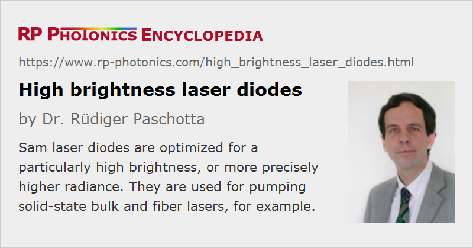

High Brightness Laser Diodes
Definition: laser diodes with particularly high radiance (brightness)
More general term: laser diodes
German: Laserdioden mit hoher Strahldichte
How to cite the article; suggest additional literature
Author: Dr. Rüdiger Paschotta
While low-power laser diodes can exhibit a very high beam quality, the beam quality of high-power laser diodes is normally substantially lower. Therefore, the obtained radiance (brightness) is often much less improved than the output power, or even lower than that of a low-power laser. However, there are high brightness laser diodes which are optimized for a particularly favorable combination of high output power and good beam quality, resulting in a particularly high brightness (more precisely: high radiance).
Types of High Brightness Laser Diodes
The term does not indicate with what technology the high radiance is achieved. In fact, the term is used for quite different types of laser diodes, and particularly for the following categories:
- Most frequently, the term is used for optimized broad area laser diodes, particularly in the form of tapered laser diodes.
- The same principles can be applied to diode bars. However, their radiance is in most cases substantially lower, even if the contained emitters have a very high radiance, since their emission is usually mutually incoherent, and there is some dead space between the emitters.
- Further, there are fiber-coupled diode lasers which are optimized in terms of radiance. That optimization does not necessarily apply to the laser diodes themselves, but can also be done with particularly efficient fiber launch systems.
The radiance of diode laser systems can also be substantially increased with methods of beam combining – in the form of coherent beam combining or spectral beam combining. In such cases, one should actually use the term high brightness diode lasers instead of high brightness laser diodes.
Applications of High Brightness Laser Diodes
A typical application of high brightness laser diodes is the optical pumping of solid-state bulk lasers. A particularly high radiance is required in cases where the pump radiation needs to be strongly focused – for example, in diode-pumped titanium–sapphire lasers. Also, there are cases where a relatively long laser crystal is needed, and the beam quality of the pump radiation then needs to be high enough to avoid substantial divergence within the length of the crystal.
Fiber lasers can also benefit from high brightness pump sources. For example, these allow one to launch a higher pump power into a double-clad fiber. In other cases, one can use a double-clad fiber with smaller pump cladding, exhibiting stronger pump absorption, so that one can use a shorter length of fiber – as can be beneficial e.g. for minimizing nonlinear effects.
The development of pump sources with higher brightness is one of the most important reasons why the performance levels of solid-state bulk and fiber lasers have been substantially raised in recent years. Note that such kind of performance increases should not be considered as resulting from power scaling; they result from component optimization rather than from the application of a scaling procedure.
A high level of radiance is also often required for laser material processing. The substantial technical advances of recent years have more and more enable the use of high-power diode lasers in this area. They are called direct diode lasers, in contrast to lower-brightness lasers which can only be used in conjunction with a diode-pumped laser, functioning as a brightness converter.
Suppliers
The RP Photonics Buyer's Guide contains 21 suppliers for high brightness laser diodes. Among them:
Questions and Comments from Users
Here you can submit questions and comments. As far as they get accepted by the author, they will appear above this paragraph together with the author’s answer. The author will decide on acceptance based on certain criteria. Essentially, the issue must be of sufficiently broad interest.
Please do not enter personal data here; we would otherwise delete it soon. (See also our privacy declaration.) If you wish to receive personal feedback or consultancy from the author, please contact him e.g. via e-mail.
By submitting the information, you give your consent to the potential publication of your inputs on our website according to our rules. (If you later retract your consent, we will delete those inputs.) As your inputs are first reviewed by the author, they may be published with some delay.
Bibliography
| [1] | J. J. Lim et al., “Design and simulation of next-generation high-power, high-brightness laser diodes”, IEEE J. Sel. Top. Quantum Electron. 15 (3), 993 (2009), doi:10.1109/HPD.2013.6706597 |
| [2] | D. Vijayakumar et al., “Spectral beam combining of a 980 nm tapered diode laser bar”, Opt. Express 18 (2), 893 (2010), doi:10.1364/OE.18.000893 |
| [3] | S. Rauch et al., “Catastrophic optical damage in 950-nm broad-areas laser diodes due to misaligned optical feedback and injection”, IEEE J. Quantum Electron. 54 (4), 2000707 (2018), doi:10.1109/JQE.2018.2856499 |
| [4] | E. Beyatli, “Efficient Tm:YAG and Tm:LuAG lasers pumped by 681 nm tapered diodes”, Appl. Opt. 58 (11), 2973 (2019), doi:10.1364/AO.58.002973 |
See also: broad area laser diodes, tapered laser diodes, diode bars, direct diode lasers
and other articles in the category lasers
|  |
If you like this page, please share the link with your friends and colleagues, e.g. via social media:
These sharing buttons are implemented in a privacy-friendly way!